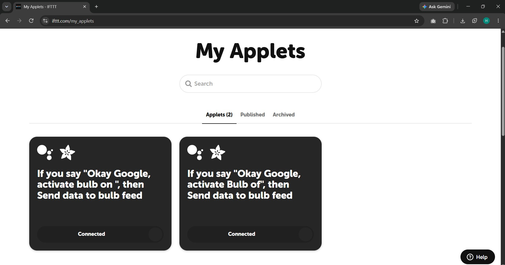
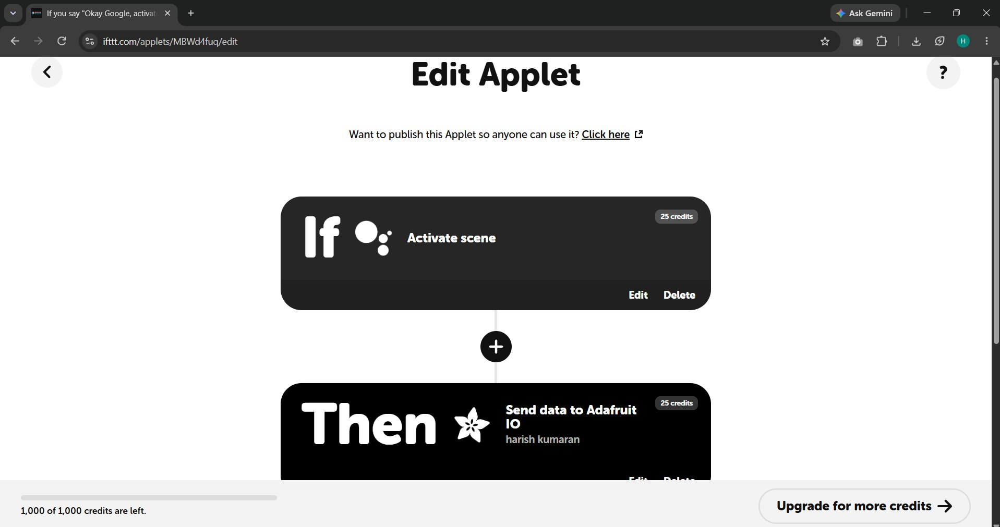
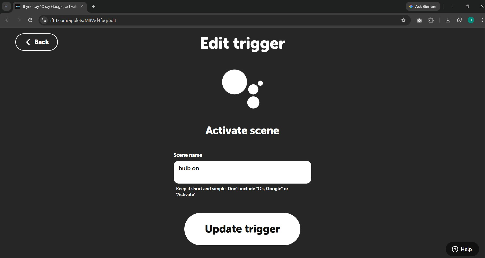
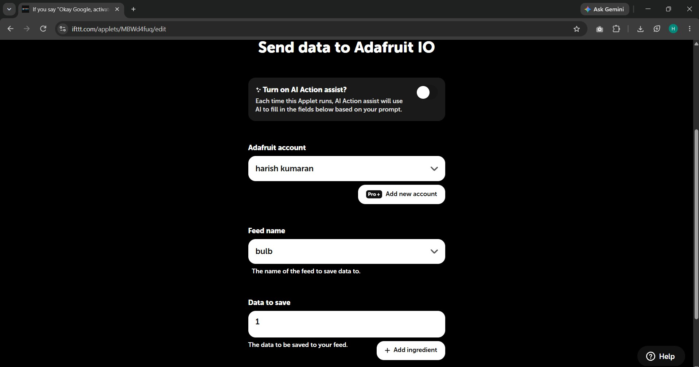
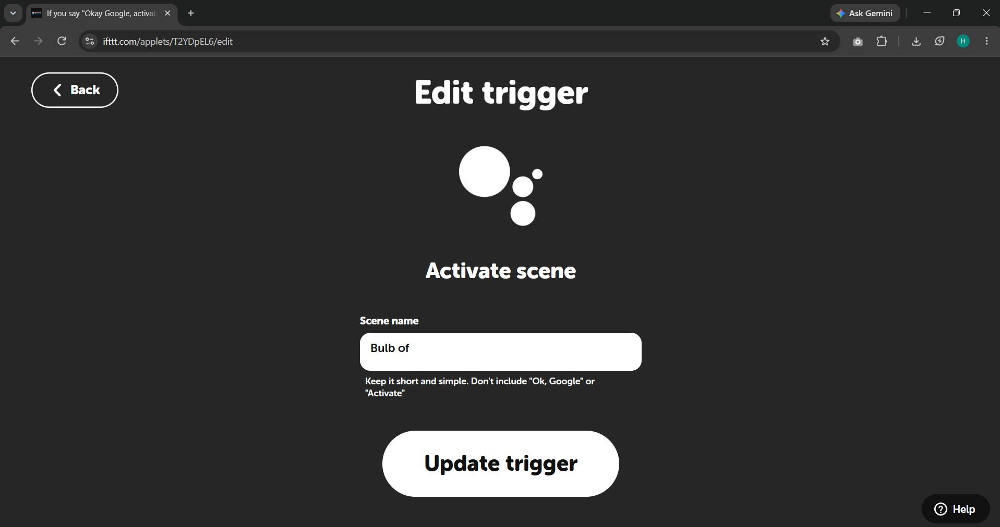
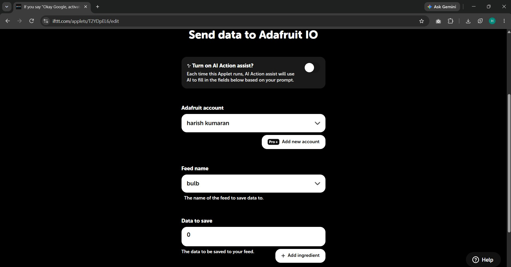

Bulb Control via Google Voice Assistant
Control a bulb using Google Assistant voice commands routed through IFTTT, Adafruit IO, and MQTT to the ESP32.
1. Overview
In this experiment, the bulb-control system established in Experiment 2 is extended with natural voice control. Instead of requiring a human operator to physically push buttons or interact with a graphical web dashboard, the system responds to spoken phrases uttered to Google Assistant.
When a user says "Hey Google, turn on the bulb", Google Assistant processes the voice prompt and triggers a cloud-based IFTTT applet. IFTTT dispatches an automated Adafruit IO feed update, which is then securely transmitted via MQTT to the ESP32. The ESP32 parses the incoming MQTT payload and toggles the relay, demonstrating how voice AI ecosystems seamlessly interface with IoT hardware.
2. Objective
The primary objective of this assignment is to extend the bulb-control system of Task 02 with voice control, using a Google Assistant voice trigger, IFTTT applets and an Adafruit IO feed, so that a spoken command switches a relay-controlled bulb through the ESP32.
- Create IFTTT applets that use Google Assistant as the trigger and Adafruit IO as the action.
- Send control values to an Adafruit IO feed:
1for the ON applet and0for the OFF applet. - Deliver the value to the ESP32 through the Adafruit IO MQTT connection already used in Task 02.
- Switch the relay and bulb without writing new firmware, reusing the hardware of the previous experiment.
- Document the end-to-end flow and record what the available evidence confirms.
3. Problem Statement
In Task 02 the bulb is controlled by clicking a toggle on a web dashboard. This still needs a person to open a browser and use a graphical interface, which is not possible when hands or eyes are busy.
This experiment addresses the following problem: How can the same bulb be controlled by a spoken phrase, without building a voice-recognition system or a custom server?
The solution relies on cloud services that already exist: Google Assistant recognises the phrase, IFTTT turns it into an action, and Adafruit IO stores the resulting value in a feed that the ESP32 can receive.
4. Introduction
Voice-triggered IoT: a voice assistant converts speech into a digital trigger that other services can react to. In this task the trigger is a Google Assistant scene phrase configured in IFTTT.
Cloud middleware: IFTTT ("If This Then That") links services that have no direct integration. Here it links Google Assistant (the "if") with Adafruit IO (the "then").
Messaging to the device: Adafruit IO stores the value in a feed and provides an MQTT service. The ESP32 stays connected to this service and receives new values, as set up in Task 02, and then drives the relay.
5. Basic Concept of IoT Automation
Cloud-based automation connects a user action to a physical device through a chain of services. Each service does one job and passes a small message to the next:
Trigger
Something a person does, here a spoken phrase to Google Assistant, starts the chain.
Automation Service
IFTTT watches for the trigger and performs the configured action, without any server code written by the student.
Communication Platform
Adafruit IO receives the value into a feed and makes it available to devices through MQTT.
Device and Load
The ESP32 receives the value, sets a GPIO pin, and the relay module switches the bulb circuit.
6. What Is IFTTT?
IFTTT is an online automation service that connects apps, devices and services with applets. Each applet has one trigger ("If this") and one or more actions ("Then that"). It is used in this project because it provides ready-made connectors for both Google Assistant and Adafruit IO, so no integration code has to be written.
In this project the applets visible in Figure 16.1 are:
- ON applet: trigger Google Assistant (Activate scene) → action Send data to Adafruit IO, feed
bulb, data1(Figures 16.2–16.4). - OFF applet: trigger Google Assistant (Activate scene) → action Send data to Adafruit IO, feed
bulb, data0(Figures 16.5–16.6).
7. Role of Adafruit IO
Adafruit IO is the cloud platform that sits between IFTTT and the ESP32. It provides the feed that stores the control value and the MQTT service that delivers it to the device:
Feed
IFTTT writes the value to the Adafruit IO feed named bulb in both applets (Figures 16.4 and 16.6). The Feeds page in Figure 17.1 lists this feed.
Control Values
The ON applet saves 1 and the OFF applet saves 0 (Figures 16.4, 16.6).
MQTT Delivery
Adafruit IO's MQTT service forwards new feed values to subscribed clients such as the ESP32, as described in Task 02.
Dashboard
The bulb_control dashboard of Task 02 is a second client of the same service (Figure 17.2).
8. Hardware Components
Hardware, cloud infrastructure, and software middleware configured to realize voice-driven bulb actuation:
ESP32
NodeMCU ESP-WROOM-32
Relay + Bulb Setup
SRD-05VDC-SL-C & AC Bulb (Task 2)
Google Assistant
Natural language voice recognition
IFTTT
Cloud integration automation hub
Adafruit IO
Cloud MQTT broker
MQTT Client
ESP32 persistent socket connection
9. Software Requirements
Services and tools involved in the Task 03 workflow:
Google Assistant
Voice recognition on a smartphone; supplies the "Activate scene" trigger.
IFTTT
Free account with two applets (Figure 16.1).
Adafruit IO
Feed bulb and the MQTT service (Section 7).
Arduino IDE
Used to compile and upload the ESP32 sketch (Section 15).
Adafruit MQTT Library
Provides Adafruit_MQTT.h and Adafruit_MQTT_Client.h used by the sketch to subscribe to the feed.
Wi-Fi Network
Internet connection for the ESP32 and the phone.
Web Browser
Used to edit the applets and view the Adafruit IO pages.
10. Connection Configuration
The existing Task 03 report states that the wiring is identical to Task 02. The connections it lists are:
| Connection | From | To | Status |
|---|---|---|---|
| Control signal | ESP32 GPIO 23 | Relay IN | Sketch: RELAY_PIN 23; README and Task 03 report agree |
| Relay power | ESP32 VIN (5V) | Relay VCC | As stated in the Task 03 report |
| Relay ground | ESP32 GND | Relay GND (common) | As stated in the Task 03 report |
| Load switching | Relay COM | 230V AC live line | As stated in the Task 03 report |
| Load return | Relay NO | Bulb load, then neutral | As stated in the Task 03 report |
11. System Architecture
Bidirectional voice-to-actuation pipeline demonstrating the sequence of signal transformations from speech recognition to relay energization:
Spoken Input
Voice AI
Integration Hub
MQTT Broker
Edge Device
Actuator
Load
"Turn on the bulb" → Google Assistant → IFTTT → Adafruit IO → MQTT → ESP32 → Bulb ON
"Turn off the bulb" → Google Assistant → IFTTT → Adafruit IO → MQTT → ESP32 → Bulb OFF
12. IFTTT Applet and Workflow
Both applets are documented individually. Values come from the IFTTT screenshots (Section 16) and the existing report:
| Item | Applet 1 — Turn ON | Applet 2 — Turn OFF |
|---|---|---|
| Applet purpose | Switch the bulb ON by voice | Switch the bulb OFF by voice |
| Trigger service | Google Assistant (Activate scene) Verified | Google Assistant (Activate scene) Verified |
| Trigger phrase / scene name | Scene name bulb on; applet title says "Okay Google, activate bulb on" (Figures 16.1, 16.3). The report text says "turn on the bulb" To confirm |
Scene name Bulb of; applet title says "Okay Google, activate Bulb of" (Figures 16.1, 16.5). The report text says "turn off the bulb" To confirm |
| Action service | Adafruit IO — Send data to Adafruit IO Verified | Adafruit IO — Send data to Adafruit IO Verified |
| Adafruit account | harish kumaran (Figure 16.4) | harish kumaran (Figure 16.6) |
| Feed name | bulb (Figure 16.4). Report text: bulb-control To confirm |
bulb (Figure 16.6). Report text: bulb-control To confirm |
| Value sent to Adafruit IO | 1 Verified |
0 Verified |
| Expected device response | Relay energises and the bulb turns ON | Relay de-energises and the bulb turns OFF |
| Applet ID (address bar) | MBWd4fuq |
T2YDpEL6 |
13. Trigger-to-Device Communication
How the configured trigger reaches the bulb, in the order documented for this task:
Step 1 — Voice Command
The user speaks the configured Google Assistant phrase on a smartphone (the existing report mentions issuing commands on a smartphone).
Step 2 — Google Assistant
Google Assistant recognises the phrase as the Activate scene trigger of one of the two applets.
Step 3 — IFTTT Applet
IFTTT runs the matching applet and performs Send data to Adafruit IO with the value 1 or 0.
Step 4 — Adafruit IO Feed
The value is stored in the feed (bulb in the screenshots) and published by the Adafruit IO MQTT service.
Step 5 — ESP32
The ESP32 is subscribed to the feed over MQTT and receives the new value. The sketch in Section 15 converts the text to lower case and treats 1 as ON and 0 as OFF.
Step 6 — Relay and Bulb
The ESP32 sets the relay pin and the relay module closes or opens the bulb circuit.
14. Communication and Data-Flow Diagram
Communication path of the Task 03 system, from the user to the bulb:
Figure 14.1 — Voice command to bulb: User → Google Assistant → IFTTT → Adafruit IO feed → MQTT → ESP32 → relay module → bulb
15. ESP32 Source Code
The sketch below is ifttt_adafruit_io_automation.ino from the Task 03 repository, shown exactly as it exists. Its header states that no new firmware was needed and that the same MQTT sketch as Task 02 is reused. The Wi-Fi name and password, Adafruit IO username and key are placeholders in the file, so no secrets are displayed.
1/*
2 * 🎙️ IFTTT + Adafruit IO IoT Automation (Documentation Sketch)
3 *
4 * IMPORTANT: No new ESP32 firmware was required for this task.
5 * The same ESP32 MQTT sketch from Task 2 is reused here.
6 *
7 * This firmware:
8 * - Subscribes to the Adafruit IO feed "bulb-control"
9 * - Receives MQTT values published by IFTTT
10 * - Processes '1' as ON
11 * - Processes '0' as OFF
12 * - Controls the relay through GPIO 23
13 *
14 * IFTTT is simply acting as another publisher to the same feed,
15 * allowing voice control without modifying the device code.
16 */
17
18#include <WiFi.h>
19#include "Adafruit_MQTT.h"
20#include "Adafruit_MQTT_Client.h"
21
22#define WIFI_SSID "YOUR_WIFI_NAME"
23#define WIFI_PASS "YOUR_WIFI_PASSWORD"
24#define AIO_USERNAME "YOUR_ADAFRUIT_USERNAME"
25#define AIO_KEY "YOUR_ADAFRUIT_IO_KEY"
26
27#define AIO_SERVER "io.adafruit.com"
28#define AIO_SERVERPORT 1883
29
30WiFiClient client;
31Adafruit_MQTT_Client mqtt(&client, AIO_SERVER, AIO_SERVERPORT, AIO_USERNAME, AIO_KEY);
32
33Adafruit_MQTT_Subscribe bulbControl = Adafruit_MQTT_Subscribe(&mqtt, AIO_USERNAME "/feeds/bulb-control");
34
35#define RELAY_PIN 23
36#define RELAY_ON HIGH
37#define RELAY_OFF LOW
38
39void connectWiFi() {
40 Serial.print("Connecting to Wi-Fi");
41 WiFi.begin(WIFI_SSID, WIFI_PASS);
42 while (WiFi.status() != WL_CONNECTED) {
43 delay(500);
44 Serial.print(".");
45 }
46 Serial.println();
47 Serial.println("Wi-Fi Connected!");
48}
49
50void connectMQTT() {
51 int8_t ret;
52 if (mqtt.connected()) {
53 return;
54 }
55 Serial.print("Connecting to MQTT... ");
56 uint8_t retries = 3;
57 while ((ret = mqtt.connect()) != 0) {
58 Serial.println(mqtt.connectErrorString(ret));
59 Serial.println("Retrying MQTT connection in 5 seconds...");
60 mqtt.disconnect();
61 delay(5000);
62 retries--;
63 if (retries == 0) {
64 while (1); // wait for watchdog to reset
65 }
66 }
67 Serial.println("MQTT Connected!");
68}
69
70void processBulbCommand(String command) {
71 command.trim();
72 command.toLowerCase();
73
74 if (command == "1" || command == "on" || command == "bulb on" || command == "bulbon") {
75 digitalWrite(RELAY_PIN, RELAY_ON);
76 Serial.println("Bulb turned ON");
77 }
78 else if (command == "0" || command == "off" || command == "bulb off" || command == "bulboff" || command == "of") {
79 digitalWrite(RELAY_PIN, RELAY_OFF);
80 Serial.println("Bulb turned OFF");
81 }
82}
83
84void setup() {
85 Serial.begin(115200);
86 delay(10);
87
88 pinMode(RELAY_PIN, OUTPUT);
89 digitalWrite(RELAY_PIN, RELAY_OFF);
90
91 connectWiFi();
92
93 mqtt.subscribe(&bulbControl);
94}
95
96void loop() {
97 if (WiFi.status() != WL_CONNECTED) {
98 connectWiFi();
99 }
100
101 connectMQTT();
102
103 Adafruit_MQTT_Subscribe *subscription;
104 while ((subscription = mqtt.readSubscription(5000))) {
105 if (subscription == &bulbControl) {
106 String command = (char *)bulbControl.lastread;
107 Serial.print("Received command: ");
108 Serial.println(command);
109 processBulbCommand(command);
110 }
111 }
112}Code Breakdown
Libraries and Settings
WiFi.h with Adafruit_MQTT.h and Adafruit_MQTT_Client.h. The broker is io.adafruit.com on port 1883.
Feed Subscription
bulbControl subscribes to AIO_USERNAME "/feeds/bulb-control". mqtt.subscribe(&bulbControl) is called once in setup().
Relay Pin
RELAY_PIN 23, RELAY_ON HIGH, RELAY_OFF LOW. The pin is an OUTPUT and starts OFF.
connectWiFi() and connectMQTT()
Join Wi-Fi with a 500 ms retry loop, then connect to the broker. After three failed MQTT attempts (5 s apart) the code waits in while (1) for the watchdog to reset the board.
processBulbCommand()
Trims and lower-cases the text. "1", "on", "bulb on" and "bulbon" switch the relay ON; "0", "off", "bulb off", "bulboff" and "of" switch it OFF.
loop()
Reconnects Wi-Fi and MQTT if needed, then readSubscription(5000) waits up to 5 seconds for a message, prints Received command: and calls processBulbCommand().
16. IFTTT Configuration Evidence
Screenshots of the IFTTT account and the two applets (the account user name is hidden):

Figure 16.1 — My Applets: two applets, "If you say Okay Google, activate bulb on …, then Send data to bulb feed" and "… activate Bulb of …", both Connected

Figure 16.2 — Edit Applet (ON applet): If Google Assistant "Activate scene", Then "Send data to Adafruit IO" (harish kumaran); 25 credits each, 1,000 of 1,000 credits left

Figure 16.3 — Edit trigger of the ON applet: Activate scene, scene name bulb on

Figure 16.4 — Action of the ON applet: Adafruit account harish kumaran, feed name bulb, data to save 1; AI Action assist is off

Figure 16.5 — Edit trigger of the OFF applet: Activate scene, scene name Bulb of

Figure 16.6 — Action of the OFF applet: feed name bulb, data to save 0
17. Adafruit IO Dashboard and Feed
The Adafruit IO feed and dashboard that the applets write to and that the ESP32 reads from. These two screenshots are the same ones shown in the Task 02 report (Figures 14.2 and 14.6):

Figure 17.1 — Adafruit IO Feeds: Welcome Feed and bulb (key bulb). The red 400 message below the table is explained in Task 02

Figure 17.2 — bulb_control dashboard (key bulb-control) with the toggle block, currently OFF
18. Video Demonstration
Google Voice Assistant Bulb Control
Voice-controlled bulb demonstration using Google Assistant, IFTTT, Adafruit IO, MQTT, and ESP32.
19. Learning Outcomes
What this assignment demonstrates:
Cloud-Based IoT Automation
A physical device can be controlled through a chain of cloud services without running a server of one's own.
IFTTT Triggers and Actions
An applet pairs one trigger (Google Assistant, Activate scene) with one action (Send data to Adafruit IO), and the two applets show how ON and OFF are separated.
Adafruit IO Feeds
A feed is a named data stream that stores the value written by IFTTT and shares it with the dashboard and the device.
MQTT Communication
The ESP32 keeps an outgoing connection to the broker, which avoids inbound-connection problems with routers and firewalls.
ESP32-Based Device Control
The same relay hardware and ESP32 connection from Task 02 is reused, so a new control interface does not require new wiring.
Cloud-to-Hardware Integration
Several independent services can be combined to reach a physical load, but their names and values must match exactly from one service to the next.
20. Reflection
This task showed me that a voice assistant is just another way to send a value into the same system. The bulb, relay and ESP32 did not change; only the way the value arrives did. Reading my own screenshots also showed me how small naming details, such as the feed name or the scene wording, have to match across IFTTT, Adafruit IO and the code, and that I should check them before saying the whole chain works.
Voice Assistants as IoT Triggers
Understood how conversational AI platforms (Google Assistant) convert complex speech utterances into discrete, actionable digital triggers.
IFTTT Ecosystem Integration
Learned how middleware services like IFTTT bridge disparate proprietary APIs without requiring bespoke backend server development.
MQTT for Edge Connectivity
Reused established MQTT connections to overcome NAT barriers and firewall issues inherent with inbound HTTP requests.
Firmware & Hardware Reusability
Demonstrated that modern IoT systems can layer new control interfaces (voice, cloud, AI) onto established hardware without re-flashing microcontrollers.
Modular System Design
Learned how combining independent scalable microservices (Google Assistant, IFTTT, Adafruit IO, MQTT) produces powerful IoT capabilities without requiring complex, monolithic firmware rewriting.
21. Conclusion
Task 03 adds Google Assistant voice control to the Task 02 bulb system. Two IFTTT applets, one for ON and one for OFF, use the Activate scene trigger and the Send data to Adafruit IO action to write 1 or 0 to an Adafruit IO feed. Adafruit IO delivers the value over MQTT to the ESP32, which switches the relay and the bulb.
The applet configuration is confirmed by screenshots, and the demonstration video shows the bulb switching on and off. Still to confirm are the exact feed and scene names, the command values the ESP32 firmware accepts, the Task 03 serial log, and a separate Task 03 video.
✅ The IFTTT and Adafruit IO configuration for voice control is documented with evidence. The name, value and video differences listed in this report should be confirmed before submission.
22. References
Documentation and resources consulted during implementation:
- IFTTT. How IFTTT Works. IFTTT Help Center. help.ifttt.com
- Adafruit Industries. Welcome to Adafruit IO. Adafruit Learning System. learn.adafruit.com
- Adafruit Industries. Adafruit IO Feeds. Adafruit IO Documentation. io.adafruit.com
- MQTT.org. MQTT: The Standard for IoT Messaging. OASIS MQTT Technical Committee. mqtt.org
- Google. Google Assistant. Google LLC. assistant.google.com
- Project files. Task 02 report and sketch (week7-task2.html).